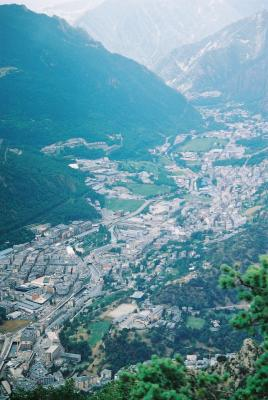
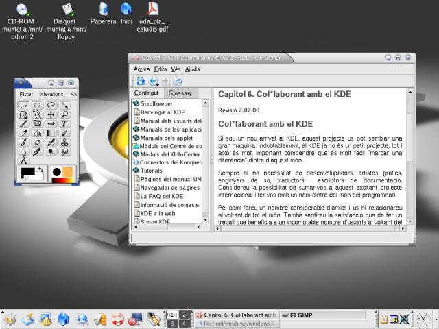
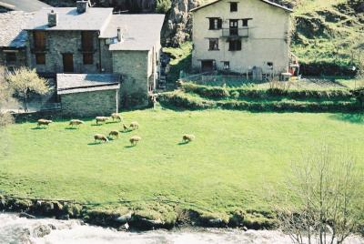

Tux in Andorra
By Alan Ward
This article is almost entirely Mike's fault. When we mailed each other about the new magazine, he very correctly made me notice I had not ever told other Linux users about Andorra, or explained the .ad in my email. So here it is: all about how Andorra, other Catalan-speaking users and Linux.
The Principality of Andorra is what you could call a micro-country, a European specialty. Compare our 65000 inhabitants - or maybe all of 80000 in winter during the ski season - to that of the middlish town nearest to you. Our 468 square km are arguably larger than Liechtenstein, but not by much.

The capital, also called Andorra, deep in its recessed valley
We are in the eastern Pyrenees, just atop the border between France and Spain. Draw a line due north of Barcelona, and there you will find us ... or maybe not on a small map 8-| . Though European, we are not part of the EU, at least for the time being.
The official language is Catalan; we are actually the only country with Catalan as its only official language. Historic Catalan-speaking regions cover parts of what are now southern France (the Roussillon), Spain (Catalonia, Valencia, Balears and parts of Arragon) and even the island of Sardinia. Some of these, and more specially Catalonia, have been active in gaining a renewed official recognition of the language. Thus the fact that the Andorran Prime Minister spoke in Catalan before the United Nations last September has been well received by these neighbors of ours.
Before Tux
Computing came to Andorra with small and mid-range mainframes in the 1970's, for government services and social security in the first place. In those days, we were using big iron exclusively: IBM S/38 and later-on AS/400. When I started out fifteen years ago, there were still people programming in RPG on OS/400. Ouch!
Personal computing went the way of most places, with a dominant of MS-DOS and later Windows 3.1, and a smaller undercurrent of Apple products ... that have since often been discontinued.
In fact, the only difference with other countries was for many years the lack of places such as a university which are traditional Unix users. That would have helped make more computer users and administrators Linux literate.
Tux infiltrates the system
My first contacts with Unix system were in university in Toulouse, France. There were several versions on different architectures including System V and a Unix by Bull and even X terminals running on 68k systems.
After leaving university, going back to MS-DOS and OS/2 was a bit of a trauma, at least until Linux came along in the form of a Slackware distribution I bought in 1995.
Later on, several distributions such as Redhat 5.0 and Mandrake 6.1 were made available by the French and Spanish magazines available here, and led to the first experimental servers being set up. Several companies tried it out, mostly for specialized servers and firewalls, though maintaining their main services on standard IBM and MS systems.
Modern distributions and their ease of setup and administration have pushed up the amount of servers, though MS still stays the preferred OS for businesses. They often have here, as in many places, the most conservative point of view on adopting new systems. And it must be said that defective products and bad support from commercial sources have made businesses somewhat suspicious of computing, to the point of not replacing existing - old but working - systems very often.
The Government and administrative services in general are also a sector to which Linux is coming all too slowly. Many admins are playing with Linux, but have not quite yet decided themselves to advocate clearly for it at their jobs. Perhaps the budget cuts that can be foreseen for next year can help about that!
Recent developments
As in many places, ADSL came to Andorra strongly tainted by Windows. Our telephone company (notice the singular) is renting a flat-rate 256 Mbit + USB modem kit for 45 EUR (about $50 US) since about a year ago. In this, they follow what has been happening in France and Spain ... though those prices have been going down. Healthy competition between state-owned and newer private telephone companies, no doubt.
The Andorran modem was initially an Alcatel model, and is now a re-badged Connexant (I think ?), both with serious driver problems under Linux. On the other side, neither are drivers stable with any of the earlier versions of Windows, so many people are upgrading to Win XP just to use ADSL - which often means upgrading their hardware also. Say guys, small countries have the same problems are larger ones, right?
A 17-year-old student of mine called Robert is, besides other qualities too numerous to mention, a Linux fan. He called up the phone company, and was told flat out that you couldn't connect using ADSL with a Linux box. He then proceeded to install Mandrake 9.1 ... and connected.
On the other hand, making ADSL accessible has also been important in granting access to newer Linux distributions to students and other young folk. They would probably not pay for a boxed distribution, and single-CD distributions have long since quit coming with magazines.
Most secondary schools are now using Linux in one form or the other. This is true, to my knowledge, for my Escola Andorrana, for the French Lycee and the catholic Sant Armengol. Though in each case you can find a systems administrator sticking out his neck and risking Linux without much administrative support. Lucky the OS is stable!
The university has also been trying out several versions of Linux. Their point of view is that since Linux is becoming more and more a part of the computer science panorama, they must add it to their students' cursus in addition to the main stream of Microsoft products (Windows, Office, ASP programming).
We - that is, I and other members of the education community in Andorra - are now moving to set up a LUG here. Nothing actually done yet, but interested readers can drop me a line and I'll keep them informed.
Around Andorra
Such a small country as ours cannot be seen in correct perspective without also looking at our neighbors.
Traditionally, the Pyrenees - and especially our eastern section - were a single continuum as far as culture goes. This was true for the first stone-age inhabitants and also with the later Basques before they went off west to what is now the Basque Country.
A 4000BC dolmen near Andorra, in Solsona(Catalonia)
Contacts with southern France, both Provençal and Catalan-speaking, were numerous during the middle ages and up to the last century. However, they have gone continuously downhill since the 1950's, to the point where each year fewer and fewer Andorran students go to Toulouse or Montpelier to university. This can be explained in part by the fact that we (in Andorra) have had heavy immigration, mostly from Catalonia, and that these immigrant populations maintain strong family ties.
From a Tux point of view, this is not much of a problem since Catalonia has since the beginning been much more involved in the Linux phenomenon than France. As the French admit themselves, their pioneering Minitel computer terminal system was an adverse factor toward their integrating the Internet community - and we all now how much that has been important for Linux.
Catalonia has long had problems in getting Microsoft to translate software into Catalan, which is the original and now a co-official language in Catalonia. Ibiza (or Eivissa in Catalan spelling) party-goers please note that Catalan is also the original language in the Balear islands - not Spanish or German! :-)
The local government (the Generalitat de Catalunya) has often had to pay MS for the right to translate, for example for Windows 95 or Office 97. Even getting a Catalan spell-checker has been difficult up to Office 2000.
Naturally, this has not been the case for GPL'd software. KDE has been going the right way for many years now, with the help of volunteers all over Catalonia and Valencia and no official support. Same for Gnome, though on a lower key.
A catalan company called EduSoft has been active in translating both GPL'd and Windows software. They keep up-to-date on OpenOffice.

The catalan version of KDE 3.1 (and Gimp)
Mandrake and SuSE have been the distributions with best support for Catalan. This is logical enough, since they are both european - and one of the strongest suits of Europe is precisely languages. One of the demos that really take the s*** out of Windows systems admins is installing a full Linux server in under 15 minutes, with the setup program in Catalan straight from the first screen. For many of them, it is the first time they see software with the menus in Catalan. When they see me select the Andorran time locale, they go wild :-)
All in all, adding Catalan support to Linux was not too hard. The major problem for regional languages around the world is often their alphabet. Catalan is a latin language similar to Italian, Spanish or Provençal, and as such can be written with the basic alphabet plus accents (àèìòù éíú) and the c-cédille (ç). This can be done with a straight iso-8859-1 (Western Europe) encoding. Linux, as its Unix ancestor, is much better equiped to add locales than many other OSs.
Future trends
My guess is that Linux use will probably come to a balance with Windows here in Andorra. It is already strong in servers, and coming into the desktop market.
However, as I see it the main penetration will be with other GPL'd end-user software such as the OpenOffice suite, when the Government finally gets down to cracking down on pirate software. Unfortunately, the Andorran market is too small for MicroSoft to take as a serious piracy threat ... as yet. :-)

Taking care of Nature, with help from our woolly friends
A further direction that interests me personally is using Linux in environment-control systems (optimizing central-heating, controlling heat loss, monoring water quality) with low-power battery-powered devices. The Pyrenees have long been living mainly off tourism, and awareness of Ecology and Nature has been increasing over recent years.
![[BIO]](../gx/2002/note.png) Alan teaches CS in Andorra at high-school and university levels. His hobbies
include science photography (both digital and traditional), trekking, rock and
processor collecting.
Alan teaches CS in Andorra at high-school and university levels. His hobbies
include science photography (both digital and traditional), trekking, rock and
processor collecting.